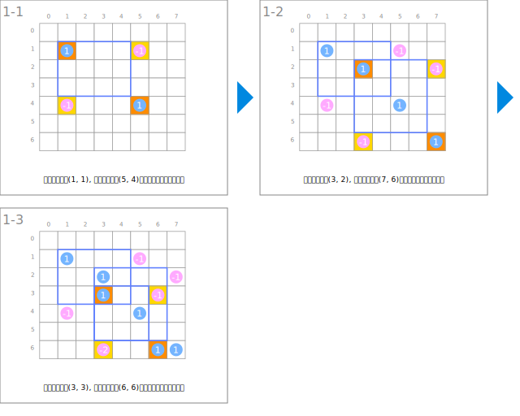
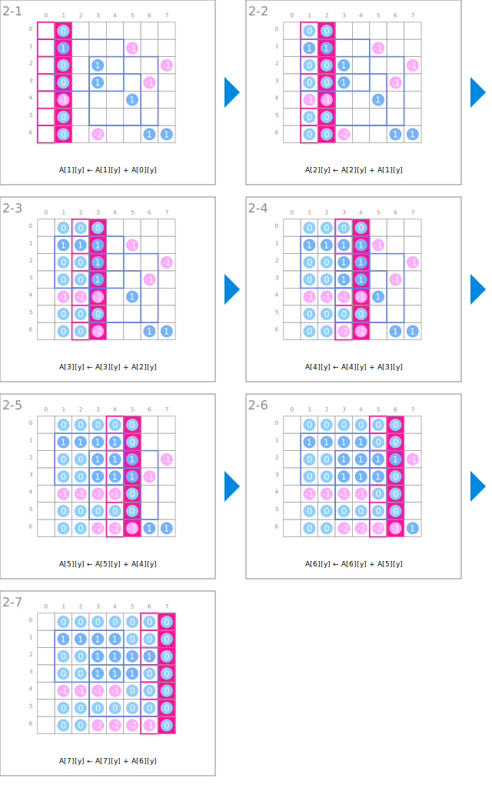

シンボル
| データ | ||
|---|---|---|
 | 長方形が重なっている枚数 | A |
| 長方形の追加 | ||
|---|---|---|
 | 左上と右下の点に対応する要素に１を加えます。 | A[x1][y1]++ A[x2][y2]++ |
 | 左下と右上の点に対応する要素から１を引きます。 | A[x1][y2]-- A[x2][y1]-- |
| 水平方向のスキャン | ||
 | 手前の要素を加算していきます。 | A[x][y] ← A[x][y] + A[x-1][y] |
| 垂直方向のスキャン | ||
| 手前の要素を加算していきます。 | A[x][y] ← A[x][y] + A[x][y-1] |
アニメーション
長方形の追加

水平方向のスキャン

垂直方向のスキャン